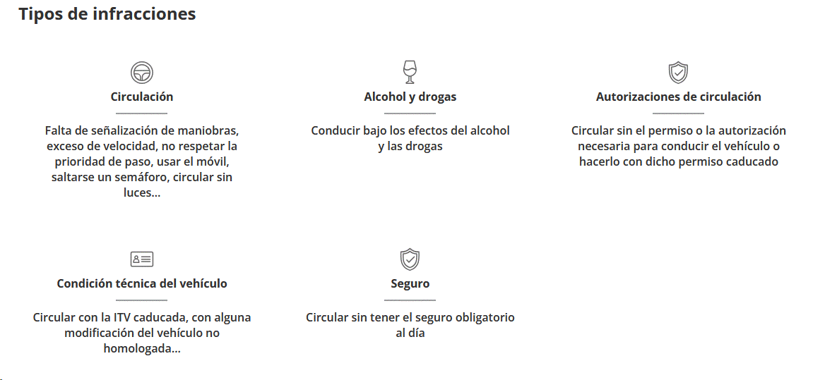
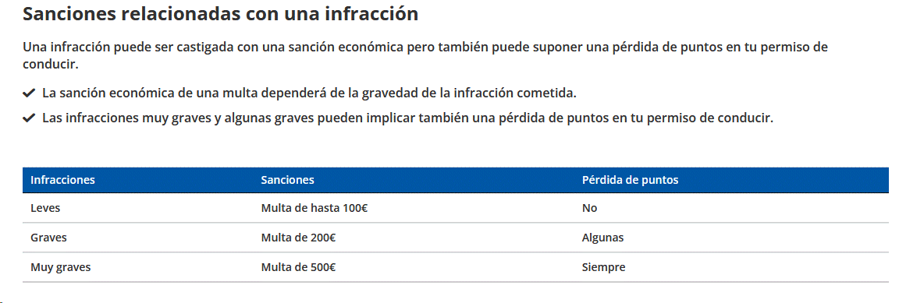
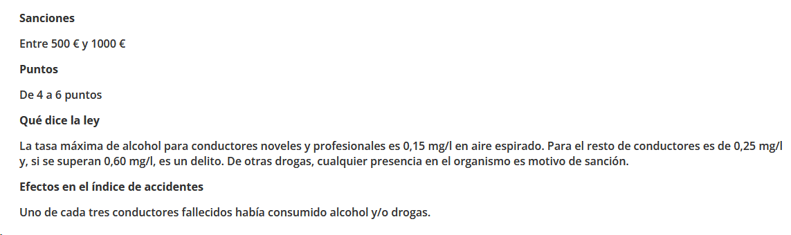
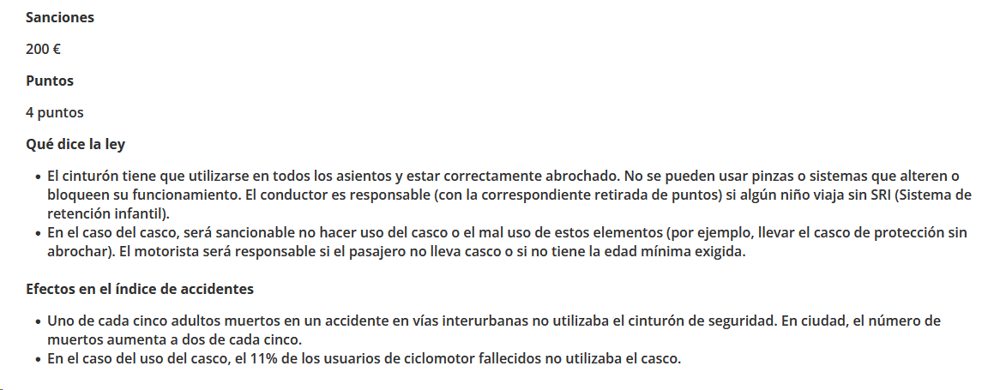
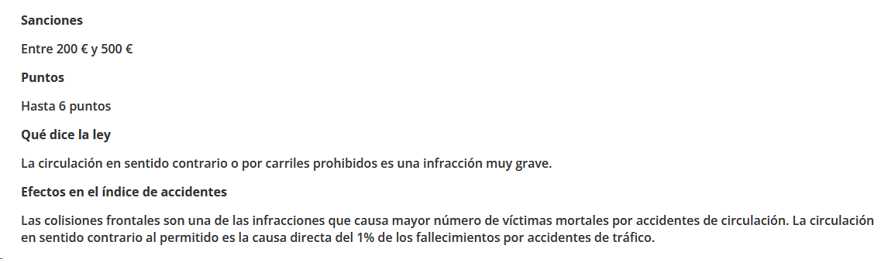
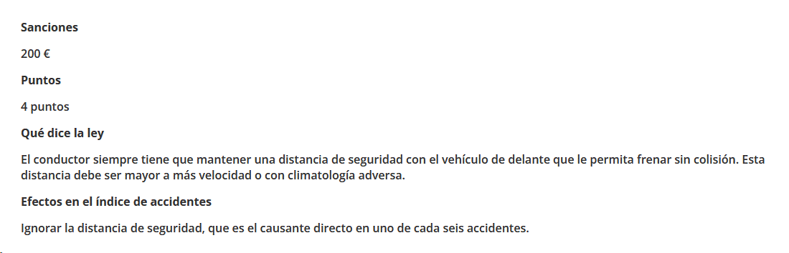
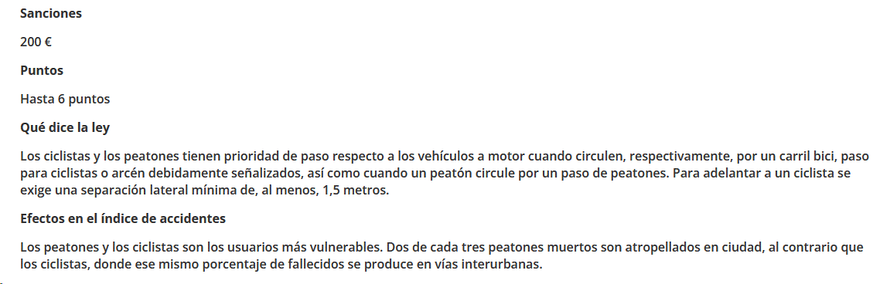

Conducir excediendo los límites de velocidad, tras el consumo de alcohol o sin cinturón de seguridad
son infracciones por las que pueden multarte. Hay otras infracciones que pueden ser desconocidas para ti,
te explicamos todo lo que necesitas saber sobre las sanciones.

Las infracciones más comunes y que generan un mayor número de sanciones son las referentes a:
✓ Exceso de velocidad
✓ Consumo de alcohol y drogas
✓ No llevar puesto el cinturón
✓ Uso del teléfono móvil
También son generalizadas las sanciones por conducir con el permiso caducado, no tener la ITV al día o conducir sin el seguro obligatorio del vehículo.

Por la gravedad de los hechos es posible que la sanción económica llegue a ser mayor. Puedes consultar los detalles de cada tipo de infracción más abajo.
Vamos a repasar las principales infracciones que se cometen al volante, la cuantía de las multas y los puntos del permiso que se pierden. No olvides que, cuando no
se respetan las reglas de tráfico, nos arriesgamos a perder algo mucho más valioso que algo de dinero y/o unos puntos.
Exceso de velocidad:

Alcohol y drogas:

Dispositivos móviles:

Casco, cinturón y SRI:

Circulación prohibida o contraria:

Distancia de seguridad:

Ciclistas y peatones:
